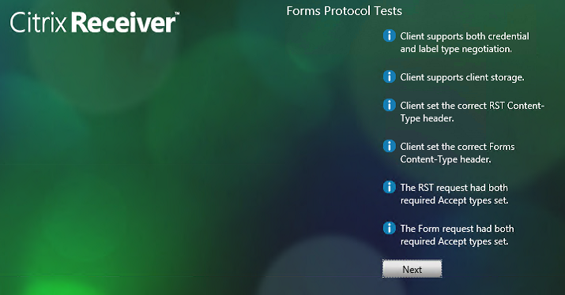
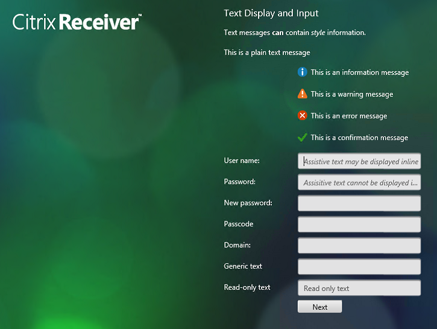
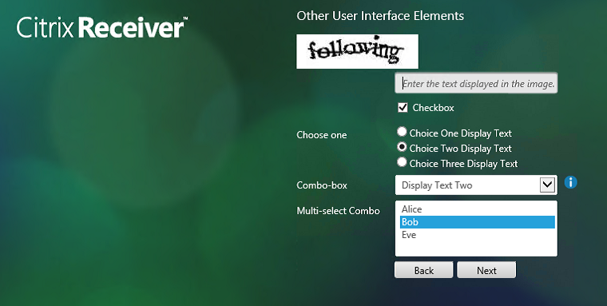
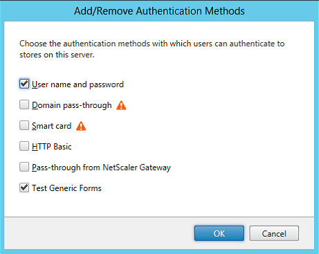
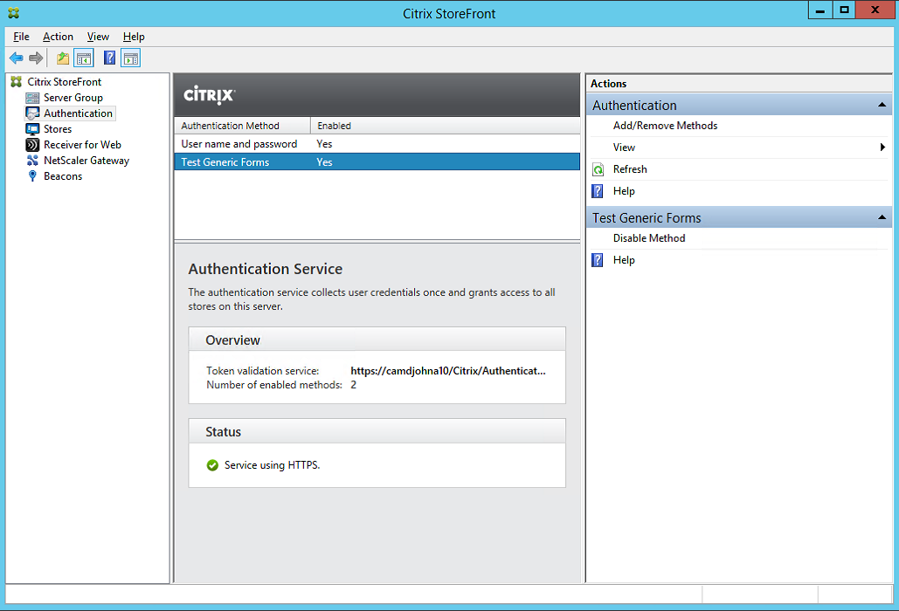

Sample: Test Forms
Overview
Introduction
This sample for the StoreFront Authentication SDK demonstrates how to create and add a custom form implementation to StoreFront. As described in the StoreFront Services Authentication SDK document, this protocol will be advertised to the clients as: CustomForms. The clients are required to recognize this protocol identifier and map it to their existing Common Forms rendering. Clients will give preference to this new protocol over the existing ExplicitForms protocol, should both be available.
Note
Only one authentication method can be deployed that advertises itself with a specific protocol choice name. As Forms customizations rely on being advertised as CustomForms, this means that only one Forms customization can be installed on a StoreFront server.
Test Forms is a simple implementation of the Forms Protocol that runs through a sequence of pre-configured forms to demonstrate all the User Interface Widgets that are currently part of the Common Forms Language. There is no processing of the returned forms data: the next form is just displayed. At the end of the test forms, the user is offered the chance to log on using the built-in user name and password form.
The following shows how the sequence of forms is displayed in Receiver for Web:
First an information message is displayed:
Next a series of tests are done and the results displayed:

The next form demonstrates display and input of textual data:

This is followed by a form illustrating the other user interface elements:

Finally the user is offered the chance to log on using the built-in user name and password form:
If the configuration has been updated to allow the user to change their expired password, and the user’s password has expired, then the change password mini-conversation begins:
When the user has successfully changed their password, they are granted access to the system.
The sample demonstrates how to extend the StoreFront Administration Console to enable the administrator to add this new authentication method.
When the “Add/Remove Methods” action is selected, the “Test Forms” authentication method is available to be added, as follows:

Selecting the “Test Generic Forms” method will deploy and enable the method. Selecting the method in the console displays the actions and status messages associated with the method.

Installer
In common with the other samples, a pre-built installer is provided in addition to the source code.
Before attempting to deploy the pre-built sample installers, it is required to add the certificate at AuthSDK.zip/Certificates/YourCompany.cer to the Third-Party Root Certification Authorities store of the Local Computer account where StoreFront is installed. This is not required for the development machine. If this step is not completed, then the StoreFront Administration Console will display an error because the digital signature of the PowerShell modules associated with this customization will fail to verify.
The installer verifies that there is not an existing customization that implements CustomForms, before deploying the StoreFront Feature package and the add-ins to the administration console. To actually deploy and enable a sample the “Add/Remove Methods” action from the “Authentication” node of the StoreFront Administration Console should be used.
Note
If the installer is being deployed to a StoreFront Server Group, it must be run on all servers in the group.
Before attempting to uninstall a sample, the associated authentication method must first be removed using the “Add/Remove Methods” action. If this is not done, attempting to uninstall will result in a dialog informing the administrator that the feature should be removed using the StoreFront Administration Console first. The sample can then be removed by using the standard “Add/Remove Programs” control panel applet.
Code Sample
Visual Studio Solution Layout
This sample demonstrates a subset of the available aspects of the SDK, and is composed of five projects:
- Feature contains the code that will be added to the Authentication Service to control the authentication process, including:
- A custom conversation object and its associated factory
- Custom forms and templates for the individual forms
- The start-up module used to populate the IoC container
- Console.Extension contains the code for the administration console, including the data models, action handlers, business logic, and user interface elements.
- Installer is a WiX project to create an msi installer to deploy and remove the Test Forms Feature. It also contains the StoreFront Feature Package definition and builds the Feature Package.
- Installer.CustomActions contains the msi custom actions required to deploy and remove the Test Forms Feature.
- UnitTests contains some unit tests to verify the merging of the code and configuration into the authentication service, verify the behavior of the Service Locator, and verify the behavior of the authentication conversation.
This sample does not require any configuration, and so does not contain a configuration project or a StoreFront Administration Console View Extension. It also requires no custom deployment steps or PowerShell commands and so does not have a Feature Installer project.
All the projects target the .NET Framework 4.5 and the MSIL platform, unless specifically stated. Projects that target .NET Framework 3.5 are either part of the StoreFront Administration Console, or loaded by the Console. The rationale behind this is discussed in the StoreFront Services Authentication SDK document.
Feature Project
This C# class library project contains the custom classes for controlling the forms conversation; see the StoreFront Authentication Form Generation document for more details. These classes include:
- The custom conversation and its associated factory
- Custom forms and templates for the individual forms that comprise the conversation
The project also contains the start-up module that is responsible for populating the IoC container with the objects required for this custom conversation. See the StoreFront Services Authentication SDK document for more details regarding start-up modules. This start-up module adds the conversation factory.
Console.Extension Project
This C# class library project contains:
Note
This project is targeted at .NET Framework 3.5, because it will be loaded by the StoreFront Administration Console.
Installer Project
This WiX project is responsible for the following:
- Creating the Test Forms StoreFront Feature Package
- Creating an installer to:
- Deploy the Feature Package
- Deploy the StoreFront Administration Console extension
- Update the registry so that the StoreFront Administration Console will load the extension Note: This project is targeted at the x64 platform.
Installer.CustomActions Project
This C# class library project uses the standard pattern, as described in the StoreFront Authentication SDK document, with the Feature identifier and Authentication Protocol Name set to appropriate values for this customization.
Note
- This project is targeted at .NET Framework 3.5.
- This project is targeted at the x64 platform to ensure that it has access to the correct registry locations.
Unit Tests Project
This project contains standard web.config merge and unmerge, route, and protocol choice tests, in addition to tests of the entire conversation including cancel and error cases.